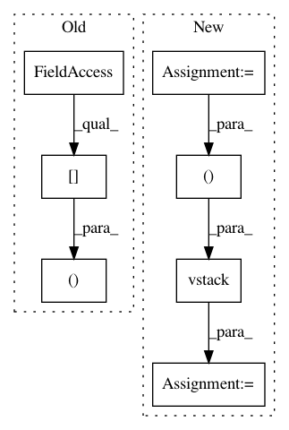

9613c71f24b8f3f289fcbace86be57dcc66360ed,mne/channels/interpolation.py,,_make_interpolation_matrix,#Any#Any#Any#,60
Before Change
G_from.flat[::len(G_from) + 1] += alpha
n_channels = G_from.shape[0] // G_from should be square matrix
C = np.r_[np.c_[G_from, np.ones((n_channels, 1))],
np.c_[np.ones((1, n_channels)), 0]]
C_inv = linalg.pinv(C)
interpolation = np.c_[G_to_from,
After Change
pos_from = pos_from.copy()
pos_to = pos_to.copy()
n_from = pos_from.shape[0]
n_to = pos_to.shape[0]
// normalize sensor positions to sphere
_normalize_vectors(pos_from)
_normalize_vectors(pos_to)
// cosine angles between source positions
cosang_from = pos_from.dot(pos_from.T)
cosang_to_from = pos_to.dot(pos_from.T)
G_from = _calc_g(cosang_from)
G_to_from = _calc_g(cosang_to_from)
assert G_from.shape == (n_from, n_from)
assert G_to_from.shape == (n_to, n_from)
if alpha is not None:
G_from.flat[::len(G_from) + 1] += alpha
C = np.vstack([np.hstack([G_from, np.ones((n_from, 1))]),
np.hstack([np.ones((1, n_from)), [[0]]])])
C_inv = linalg.pinv(C)
interpolation = np.hstack([G_to_from, np.ones((n_to, 1))]) @ C_inv[:, :-1]
assert interpolation.shape == (n_to, n_from)
In pattern: SUPERPATTERN
Frequency: 3
Non-data size: 7
Instances
Project Name: mne-tools/mne-python
Commit Name: 9613c71f24b8f3f289fcbace86be57dcc66360ed
Time: 2020-07-20
Author: larson.eric.d@gmail.com
File Name: mne/channels/interpolation.py
Class Name:
Method Name: _make_interpolation_matrix
Project Name: GPflow/GPflowOpt
Commit Name: ee97f87f3d19aad4329fb012b2819d13b48c8fa3
Time: 2017-07-28
Author: ivo.couckuyt@ugent.be
File Name: GPflowOpt/pareto.py
Class Name: Pareto
Method Name: pareto2d_bounds
Project Name: scikit-learn-contrib/imbalanced-learn
Commit Name: cddf39be59c3c1231d2d4fd3b9bfc10a21e63780
Time: 2017-08-24
Author: g.lemaitre58@gmail.com
File Name: imblearn/under_sampling/prototype_generation/cluster_centroids.py
Class Name: ClusterCentroids
Method Name: _sample